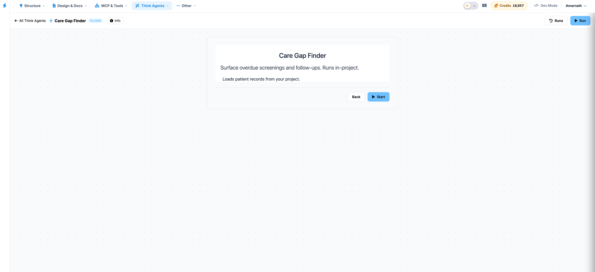
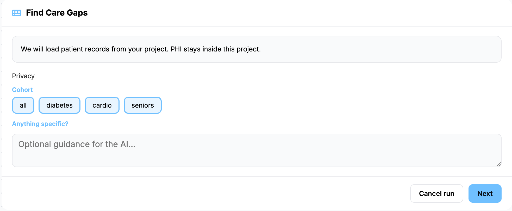

Care Gap Finder
The Care Gap Finder identifies overdue screenings, preventative care lapses, and missing clinical follow-ups directly within your application ecosystem. Operating strictly as an in-project utility, it flags clinical care gaps according to medical priority while maintaining rigid data boundaries to ensure sensitive information remains completely localized.

Key Features
- In-Project Data Isolation: Processes records completely within your existing infrastructure, ensuring that Protected Health Information (PHI) stays put and never leaves your secure project environment.
- Controlled Analysis Planning: Outlines a structured execution blueprint detailing the patient demographics and screening criteria targeted for review, pausing for explicit confirmation before processing begins.
- Automated Clinical Review: Systematically evaluates individual patient records against standard clinical guidelines to catch missed treatments, delayed immunizations, or overdue chronic care screenings.
- Prioritized Gap Reporting: Compiles identified lapses into an actionable compliance dashboard, automatically sorting clinical care gaps by medical urgency and operational priority.
Process Workflow
-
Load Patient Records: Ingest the targeted patient data sets within
your local project environment.

- Authorize Execution Plan: Review the targeted care metrics and authorize the execution plan to initiate the clinical scan.
- Scan for Lapses: Allow the system to cross-reference patient histories against active care criteria and medical timelines.
- Address Care Gaps: Evaluate the prioritized dashboard to deploy medical outreach and resolve high-urgency care lapses safely.